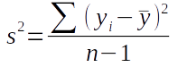
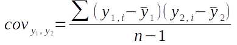
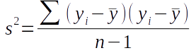
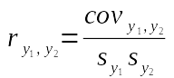
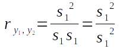

In lecture we learned how matrix algebra can be used to do calculations on multiple variables at once. We will use matrix algebra to calculate a correlation matrix today, like I did for you in lecture, so you can see how it's possible to use matrix methods to analyze multiple variables simultaneously.
Our first step in calculating correlations between pairs of variables will be to calculate variances (for single variables) and covariances (between pairs of variables). The non-matrix algebra formula for variance is:

This formula tells us to subtract the mean of the variable from each of the data values (yi), square the differences ((yi - ȳ)2), sum them all up (Σ), and divide by degrees of freedom (n-1) to calculate variance. The differences between observations and means are residuals, so we're calculating a sum of squared residuals, and dividing that by degrees of freedom.
The covariance formula is:

The covariance between y1 and y2 is calculated by calculating residuals for each of the two variables, multiplying them together to get the cross-products, summing the cross-products, and dividing by degrees of freedom.
If we re-express the variance formula as:
you'll see that it's essentially the same as the covariance formula, but instead of using two different variables measured on the same individuals we're using the same variable twice.
We can calculate a correlation coefficient from a covariance by dividing covariance by the product of the standard deviations for the two variables:

This says that to get a correlation coefficient between y1 and y2 we divide the covariance between them by the product of their two standard deviations, sy1 and sy2.
Since we've just shown that variance is just the covariance of a variable with itself, the correlation coefficient for any variable with itself is going to be:
Thus the correlation of a variable with itself will always be 1.
For a single pair of variables the correlation coefficient is simple to calculate using these nice, conventional formulas. But, if we have multiple variables calculating correlations between every pair of variables one at a time is less convenient, and using matrix algebra so that we can do all of them all at once is a better choice. The matrix operations we will use are as follows (illustrated with a small example data set):
Step 1: Calculate the residuals. These are calculated by subtracting a matrix of means from the matrix of data.
Step 2: Calculate the covariance matrix, S. This is done by multiplying the transpose of the residuals by the residuals, and then dividing each element by degrees of freedom
Step 3: Calculate the correlation matrix from the covariance matrix. This is done by placing the standard deviations into a diagonal matrix (i.e. one that has standard deviations on the main diagonal and 0's everywhere else), calculating its inverse, and then both pre- and post-multiplying S by the standard deviation inverse matrix to get the correlation matrix.
Why and how this works was explained in the lecture, and hopefully will become clearer as you work through the steps and read the explanations below. Let's begin.
We will do the calculations in R, so start R Studio and create a new project called "matrix_algebra" in a new folder for today's activity (you'll see the matrix_algebra.Rproj file in the new project folder when you're done).
Next, download this file, called leaves.xlsx, to your project folder, which is the data we will use for today. Make sure you save it into the project folder you just created (or move it into the project folder if it goes someplace else automatically).
These are measurements from 66 leaves made by a previous Biol 532 class. The column names are pretty self-explanatory - if you don't know what a petiole is, it's the short stem that attaches the leaf to the twig it grows on (circled in red on the picture of a sycamore leaf to the left). The seven variables represent various measures of the weight and dimensions of the leaves. Multivariate data are appropriate for measuring these leaves, because, as you can see, they are complex objects whose sizes and shapes are difficult to represent with a single variable.
Download the Rmd file for today, called matrix_algebra.Rmd, to your project folder and open it in R Studio.
Import the leaves data into R using the readxl command (in chunk import.data):
library(readxl)
read_excel("leaves.xlsx") -> leaves
We didn't need to specify the sheet in this case because the first sheet is read by default, and that's the only sheet with data in it. The worksheet that the leaf data are in is called leaves, so read_excel("leaves.xlsx", sheet = "leaves") would also have worked, but it wasn't necessary.
The first step in this calculation is to subtract a matrix of means (Y) from
the matrix of data (Y) to get a matrix of residuals (R).
To check that you're understanding how the matrix operations work you will construct the calculation step from the matrices provided below. These matrices are small examples of a data set with three variables (x1, x2, and x3) and five rows (labeled Data) along with all of the matrices you need to complete the calculations for a correlation matrix. Your job is to build each calculation step with them.
A template for the calculation is given below the matrices, and you need to drag the correct pieces into their positions in the template to complete the step. For example, to calculate the matrix of residuals you need to start with the data and subtract a matrix of means for each variable - so, you would drag the data piece into the first position, the means into the second position, and the matrix of residuals into the third.
Once you've dragged the matrices into place the code you need to do the calculations in R will appear below, which you can enter into your Rmd file.
Matrices
|
- |
= |
The next step is to calculate the covariance matrix from the residuals. The formula is:
R'R/(66-1) = S
The transposed residuals, R', are multiplied by the residuals, R, and the results are then divided by the sample size minus 1, or 66-1 = 65, to calculate the covariance matrix, S. The covariance matrix, S, is a matrix of variances on the main diagonal, and covariances in all the other positions.
Matrices
|
× |
/(66 - 1) = |
To convert those covariances into correlations we need to get standard deviations into a diagonal matrix (that is, standard deviations on the diagonal and 0's elsewhere, C), and then invert it. Once we have the inverse of the standard deviation matrix we can use it to convert the covariance matrix into a correlation matrix.
We'll get the standard deviation diagonal matrix first. For this calculation we will extract the diagonal of the covariance matrix and convert the variances to standard deviations by taking their square roots - this will produce the standard deviation diagonal matrix.
Matrices
|
diag( |
) |
½ |
= |
Next we just need to start with the standard deviation diagonal matrix we just made, and invert it.
Matrices
|
-1 |
= |
Now we're ready to do the last set of matrix multiplications that will calculate the correlation matrix. We have a covariance matrix, made up of variances and covariances, and to convert them to correlations we need to divide each by the product of their standard deviations. The formula is C-1SC-1 - that is, pre-multiply the covariance matrix by the inverse of the standard deviations matrix, and then post-multiply the result by the same inverse of the standard deviations (note that since you'll use the inverse of the standard deviations twice they appear twice in the collection of matrices - you can't use the same one in two places...sorry, haven't figured out how to do that yet).
Matrices
|
× |
× |
= |
Calculating the correlation matrix with matrix algebra is a nice way to learn how to matrix algebra works, but it isn't necessary - a single R function calculates a correlation matrix for us (in code chunk r.correlation.matrix):
cor(leaves)
You'll see that this correlation matrix matches the one you did above, so it won't be necessary to calculate a correlation matrix using matrix algebra anymore.
Since R does all of these steps for us with a single function it's a little extravagant to do all the steps by hand, but we did it to demonstrate how matrix operations work in R.
But, matrix methods are not just an alternative way of doing calculations more efficiently, they can be used to get additional, useful information from a matrix of values. For example, we can calculate a measure of variance for this multivariate data set that is based only on the variation that is uniquely attributable to each of the seven variables, with the shared variation between them removed.
You can calculate the covariance matrix with (chunk r.var.command):
var(leaves)
Again, a single R command can do several of the steps we did by hand. The determinant of this covariance matrix is a generalized measure of variance (chunk r.determinant.of.covariance.matrix):
det(var(leaves))
The determinant combines the variances by multiplying them together and removes the double-counting of variation that happens due to the fact that the variables are all inter-correlated with one another. We will see this value show up in some of the multivariate methods we use in a few weeks. If all goes well you should get a value of 191126.1.
You can see how much of an effect removing the covariances has on the result if you calculate the product of variances without removing the covariances (chunk r.product.of.variances):
prod(diag(var(leaves)))
You'll see that simply multiplying the variances together gives you a much bigger number than using the determinant (you should get a product of 120437695) - removing the covariances gives us a more accurate understanding of how much variation is in the data, so the determinant is used instead of the product of the variances as our measure of multivariate variance.
We're going to be working with correlation matrices a fair amount, so let's take a minute to learn some of the terminology associated with them.
First, a correlation matrix is a square matrix because it has the same number of rows and columns. It has to be square because the same list of variables appear in both the rows and columns.
The image below shows the correlation matrix with some color coding to identify different aspects of the matrix. Hover over various parts of the matrix to see popups that explain what they are.
Note the following:
The same terminology can be used for any square matrix - a covariance matrix has a main diagonal, upper triangle, and lower triangle as well.
That's it! Knit the R Markdown file, and upload it to the course web site.